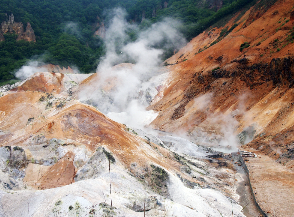
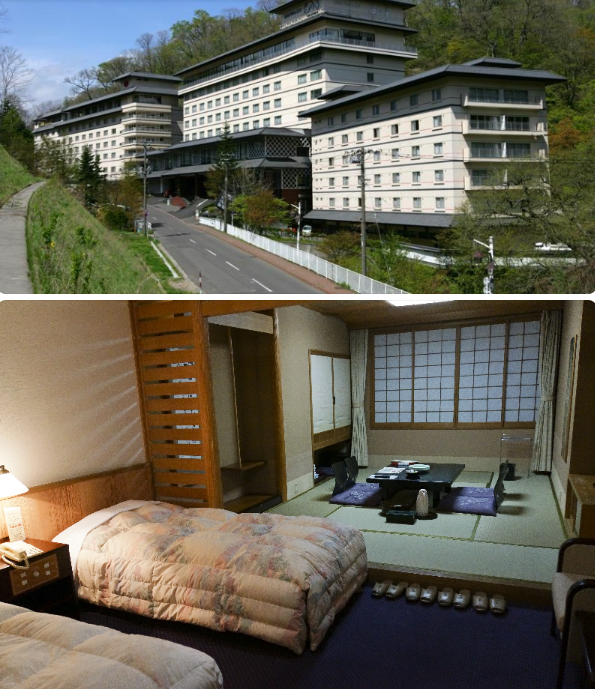

1. 홋카이도 온천 패키지 3박4일의 특징
이번 홋카이도 온천 패키지 3박4일은 단순히 삿포로 시내만 둘러보는 일정이 아니라 홋카이도의 대표적인 온천 지역과 인기 관광코스를 함께 경험할 수 있도록 구성된 점이 특징입니다. 홋카이도는 계절에 따라 풍경과 분위기가 크게 달라지는 지역이라 같은 일정이라도 여행 시기에 따라 느끼는 매력이 달라질 수 있습니다. 겨울에는 설경과 온천의 조합이 인기가 많고, 봄과 여름에는 비교적 선선한 날씨와 자연 풍경을 즐기기 좋습니다. 처음 홋카이도를 방문하는 경우 여러 지역을 직접 연결해서 이동하기가 번거로울 수 있어 패키지 일정이 편리한 선택이 될 수 있습니다.
2. 노보리베츠와 죠잔케이 온천마을
상품명에는 노보리베츠와 죠잔케이 등 3대 온천마을이 강조되어 있습니다. 노보리베츠는 홋카이도를 대표하는 온천 지역 중 하나로 다양한 온천수와 독특한 지형으로 잘 알려져 있고, 죠잔케이는 삿포로에서 접근하기 좋은 온천지로 유명합니다. 온천마을 일정이 포함된 상품이라면 실제로 온천욕 시간이 확보되는지, 단순 관광인지 숙박까지 포함되는지, 수건이나 온천 이용료가 별도인지 등을 확인하는 것이 좋습니다. 또한 일본 온천은 시설마다 이용 규정이 다를 수 있으므로 문신 관련 규정이나 대욕장 이용시간도 필요하다면 미리 확인해보세요.

3. 홋카이도 인기코스와 이동 동선
홋카이도는 지역 간 거리가 넓어 이동시간이 긴 편입니다. 따라서 3박4일 패키지에서는 하루에 방문하는 장소 수와 버스 이동시간을 함께 보는 것이 중요합니다. 상품명에 베스트셀러 인기코스가 포함되어 있더라도 실제 일정이 너무 촘촘하면 자유시간이 부족할 수 있습니다. 반대로 이동 동선이 잘 구성되어 있다면 짧은 일정 안에서도 여러 대표 명소를 효율적으로 둘러볼 수 있습니다. 세부 일정표에서 관광지별 체류시간과 식사시간, 호텔 도착시간 등을 확인하면 여행 강도를 미리 예상하는 데 도움이 됩니다.

4. 게요리 무제한과 별미 간식 구성
이번 상품명에는 게요리 무제한과 별미 간식 제공이 안내되어 있습니다. 홋카이도 여행은 해산물과 지역 음식에 대한 기대가 큰 경우가 많아 식사 구성이 중요한 비교 요소가 됩니다. 게요리 무제한의 경우 실제 제공되는 게 종류와 이용시간, 식사 방식이 뷔페인지 코스 형태인지 등을 확인하는 것이 좋습니다. 별미 간식 역시 어떤 메뉴가 제공되는지 출발일에 따라 달라질 수 있으므로 상세 일정에서 확인하세요. 식사 포함 횟수와 자유식 여부를 함께 보면 현지에서 추가로 필요한 식비도 예상하기 쉽습니다.
5. 홋카이도 온천 여행 예약 전 체크리스트
예약 전에는 항공 출발·도착 시간, 출발 확정 여부, 호텔 등급과 위치, 온천 이용 조건, 포함 식사, 추가비용, 가이드 경비, 쇼핑 일정, 선택관광 여부와 취소 규정을 확인하세요. 홋카이도는 겨울철 폭설이나 기상 악화로 이동시간이 늘어날 수 있고 일부 일정이 변경될 가능성도 있으므로 계절에 따른 여행 조건을 함께 고려하는 것이 좋습니다. 또한 온천마을에서 실제 머무는 시간과 숙박 여부를 확인하면 여행 목적에 맞는 상품인지 판단하기 쉽습니다.
홋카이도 온천 패키지 3박4일 상품 확인하기
실제 출발일, 최신 가격, 항공편, 호텔, 포함·불포함 조건과 취소 규정은 판매 페이지에서 최종 확인하세요.
여행 상품 자세히 보기 →홋카이도 온천 패키지 3박4일 FAQ
홋카이도 온천 패키지는 몇 박 일정인가요?
이 페이지에서 소개하는 상품은 3박4일 일정으로 정리했습니다.
노보리베츠와 죠잔케이를 방문하나요?
상품명 기준 노보리베츠와 죠잔케이가 포함된 것으로 안내되어 있습니다.
온천 이용이 포함되나요?
상품명에 온천마을이 강조되어 있지만 실제 온천욕 포함 여부와 이용시간은 상세 일정에서 확인하는 것이 좋습니다.
게요리 무제한이 포함되나요?
상품명 기준 게요리 무제한이 안내되어 있습니다. 메뉴와 이용조건은 예약 페이지에서 확인하세요.
홋카이도는 어떤 계절에 가기 좋은가요?
계절마다 분위기가 다릅니다. 눈과 온천을 즐기려면 겨울, 비교적 선선한 날씨와 자연 풍경을 원한다면 봄·여름도 많이 찾습니다.